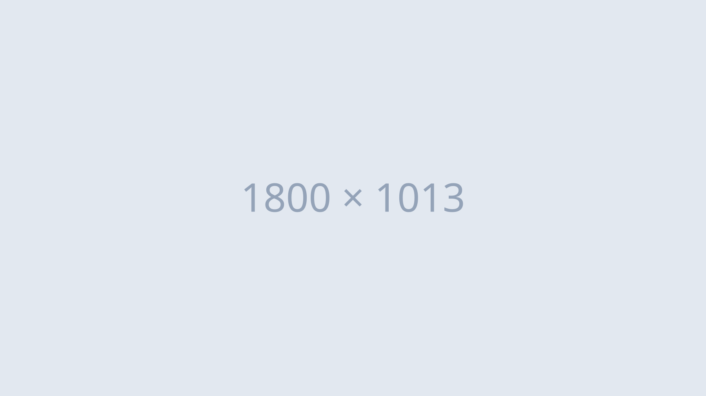

Four days by the sea to hear yourself think.
Small retreats for twelve people: walks, good food, honest conversations and a plan to take home. Cornwall in April, the Lake District in October.

Next retreat · spring 2027
Reset by the Sea.
A whitewashed farmhouse above a cove on the north Cornish coast. Mornings on the cliff path, afternoons that are yours, suppers round one long table.
- When
- Thu 15 – Sun 18 April 2027
- Where
- Carn Wartha, near St Agnes, Cornwall
- Group
- 12 places, 5 left
- Price
- £1,850 per person · rooms, meals and sessions included


Gently planned, with room to breathe.
-
Thursday 15 April
- Arrive and settle in
- Welcome tea by the fire
- Opening circle
- Supper
-
Friday 16 April
- Sunrise walk, for anyone awake
- Session: where you are
- A free afternoon: sea, sleep, a book
- 1:1 time with Isla
- Fireside session
-
Saturday 17 April
- Breakfast
- Walking sessions in pairs on the cliff path
- Workshop: the next step
- Celebration supper
-
Sunday 18 April
- A slow breakfast
- Closing circle and your written plan
- Lunch, then home by two
Carn Wartha
Six rooms, one long table, a garden gate onto the cliff path.
The house, and what's included.
Everyone has a room of their own. Meals are cooked for us from what's local, mostly vegetarian, and there's always more tea.
- Three nights in a private room
- Every meal, every diet catered for
- Five group sessions with Isla
- One 1:1 session during the stay
- Guided walks on the coast path
- A printed workbook to keep
- A group call two weeks later
- Lifts from Truro station
£1,850per person · a £400 deposit holds your place · travel not included
Autumn retreat · booking opens 1 February
Still Water
Four days in a stone house by the lake near Coniston, as the fells turn copper.
- 7–10 October 2027
- 12 places
- £1,950
Before you pack.
A packing list follows
Two weeks before, with directions and the room plan.
Want one of the twelve places?
Write and tell me a little about where you are. I reply to every enquiry myself, within two working days.